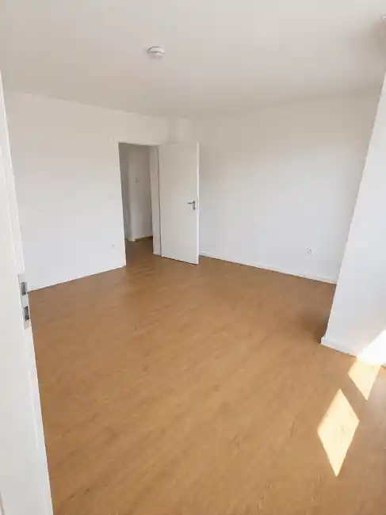

Mietwohnungen & Immobilien in Traunstein.
Hier veröffentlichen wir verfügbare Mietwohnungen, Doppelhaushälften, Garagen und Stellplätze sowie Büro- und Gewerbeflächen aus unserem Bestand in Traunstein und im Chiemgau – provisionsfrei direkt vom Eigentümer.

3-Zimmer-Wohnung in zentraler Lage – ca. 75 m².
Attraktive und helle 3-Zimmer-Wohnung mit Balkon in zentraler Lage in Traunstein. Der Bahnhof ist in etwa zehn Minuten erreichbar; Einkaufsmöglichkeiten, Apotheke und weitere Einrichtungen des täglichen Bedarfs befinden sich in unmittelbarer Nähe. Die Wohnung ist ab 01.10.2026 verfügbar und wird provisionsfrei direkt vom Eigentümer vermietet.
Mietwohnungen
Aktuell: 3-Zimmer-Wohnung mit Balkon in Traunstein, ca. 75 m², 900 € Kaltmiete, verfügbar ab 01.10.2026.
Details ansehenDoppelhaushälften
Derzeit keine Vakanz veröffentlicht.
Garagen & Stellplätze
Derzeit keine Vakanz veröffentlicht.
Büro & Gewerbeflächen
Derzeit keine Vakanz veröffentlicht.